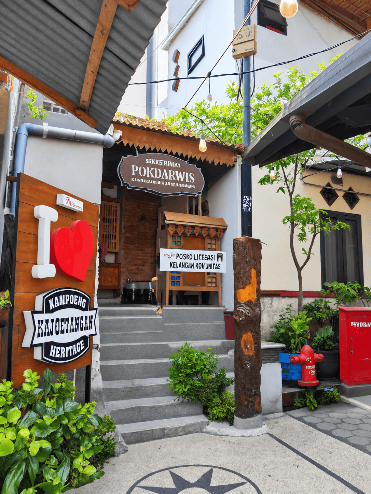

TEMPAT IKONIK · MALANG
Sekertariat Pokdarwis

Sepenggal cerita
Sekretariat Pokdarwis merupakan pusat informasi dan pengelolaan Kampung Heritage Kayutangan yang dikelola oleh masyarakat lokal. Pokdarwis ditetapkan pada tahun 2018 dan melibatkan warga serta staf RW 1, RW 2, RW 9, dan RW 10. Di sini, pengunjung dapat memperoleh informasi wisata, melakukan reservasi tour guide, serta mendapatkan informasi mengenai kegiatan budaya dan UMKM lokal. Keterlibatan warga menjadikan Kayutangan sebagai kawasan wisata berbasis masyarakat atau Community Based Tourism (CBT).
A Brief Story
The Pokdarwis Secretariat serves as the information and management center for Kayutangan Heritage Village and is managed by the local community. Pokdarwis was established in 2018 and involves residents and staff from RW 1, RW 2, RW 9, and RW 10. Visitors can obtain tourism information, make tour guide reservations, and learn about local cultural activities and micro, small, and medium enterprises (MSMEs). The active involvement of local residents makes Kayutangan a community-based tourism (CBT) destination.